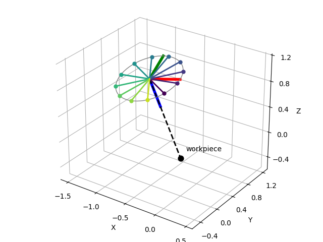

Note
Go to the end to download the full example code.
Tool-Axis Redundancy via Swing and Twist#
Many robot tasks only constrain the direction a tool points, not the roll about the tool’s own axis. Drilling, deburring, spraying, or spot welding all leave the rotation about the tool axis free, because the tool is symmetric about it. Swing-twist decomposition isolates exactly this redundant degree of freedom.
Choosing the tool axis as the twist axis, an end-effector orientation splits into a swing that aims the tool axis (the task-relevant approach direction) and a twist that rolls the tool about that axis (the redundant part). We take a nominal end-effector orientation, recover its swing and twist, and then sweep the twist to generate a whole family of orientations that all keep the tool pointing the same way.
import matplotlib.pyplot as plt
import numpy as np
from pytransform3d.rotations import (
axis_angle_from_two_directions,
matrix_from_quaternion,
plot_basis,
quaternion_from_axis_angle,
swing_twist_composition,
swing_twist_decomposition,
unitz,
)
The tool axis is the end-effector’s body z-axis. We build a nominal orientation that aims the tool along a desired approach direction and adds some arbitrary roll, then decompose it about the tool axis. The swing encodes where the tool axis points; the twist is the roll about it.
tool_axis = unitz
approach = np.array([1.0, -0.7, -0.6])
approach = approach / np.linalg.norm(approach)
aim = quaternion_from_axis_angle(
axis_angle_from_two_directions(unitz, approach)
)
roll = quaternion_from_axis_angle(np.hstack((tool_axis, np.deg2rad(40.0))))
q_nominal = swing_twist_composition(aim, roll)
swing, twist = swing_twist_decomposition(q_nominal, tool_axis)
Sweeping the twist while holding the swing fixed produces end-effector orientations that all share the same tool-axis direction – only the roll about the tool changes. This is the family of solutions a task-space planner is free to pick from, e.g. to dodge a joint limit or an obstacle.
twist_angles = np.linspace(0.0, 2.0 * np.pi, 12, endpoint=False)
family = [
swing_twist_composition(
swing, quaternion_from_axis_angle(np.hstack((tool_axis, angle)))
)
for angle in twist_angles
]
# The tool tip sits at a workpiece; the end-effector is set back along the
# approach direction so the tool axis points at the workpiece.
workpiece = np.zeros(3)
reach = 1.4
tcp = workpiece - reach * approach
The nominal end-effector orientation is drawn as a full frame, with its blue tool axis running down the dashed shaft to the workpiece. The rest of the family is shown as a pinwheel: each spoke is a reference mark painted on the tool (its x-axis) at one twist angle, colored from dark to bright as the roll advances. Every spoke shares the same tool axis; only the roll differs.
radius = 0.5
ax = plot_basis(
R=matrix_from_quaternion(q_nominal), p=tcp, s=radius, ax_s=1.5, lw=4
)
# Tool shaft from the end-effector to the workpiece and the workpiece itself.
ax.plot(*np.column_stack((tcp, workpiece)), "--", color="k", lw=2)
ax.scatter(*workpiece, color="k", s=60)
ax.text(*(workpiece + [0.05, 0.05, 0.1]), "workpiece")
# Circle traced by the tool's x-axis to emphasize the free roll.
fine = np.linspace(0.0, 2.0 * np.pi, 60)
ring = np.array(
[
tcp
+ radius
* matrix_from_quaternion(
swing_twist_composition(
swing, quaternion_from_axis_angle(np.hstack((tool_axis, a)))
)
)[:, 0]
for a in fine
]
)
ax.plot(ring[:, 0], ring[:, 1], ring[:, 2], color="gray", lw=1)
# Pinwheel spokes: the tool's x-axis reference mark at each twist angle.
colors = plt.cm.viridis(np.linspace(0.0, 1.0, len(family), endpoint=False))
for q, color in zip(family, colors):
tip = tcp + radius * matrix_from_quaternion(q)[:, 0]
ax.plot(*np.column_stack((tcp, tip)), color=color, lw=2)
ax.scatter(*tip, color=color, s=25)
ax.view_init(elev=28, azim=-55)
lo = np.minimum(tcp, workpiece) - 0.6
hi = np.maximum(tcp, workpiece) + 0.6
ax.set_xlim((lo[0], hi[0]))
ax.set_ylim((lo[1], hi[1]))
ax.set_zlim((lo[2], hi[2]))
ax.set_box_aspect(hi - lo)
plt.subplots_adjust(left=0, right=1, bottom=0, top=1)
plt.show()

Total running time of the script: (0 minutes 0.114 seconds)